I. Identification
| Proposed Unicode and CLR name | Possible CLDR English Keywords | Category | Closest Unicode Emoji |
|---|---|---|---|
| Up Switch | Switch, On, Up, Active | Computer | 🔼⬆️▶️💡 |
| Down Switch | Switch, Off, Down, Inactive | Computer | ⬇️🔽🛑🚫⛔️⏹️📴❌ |
II. Images
Up Switch
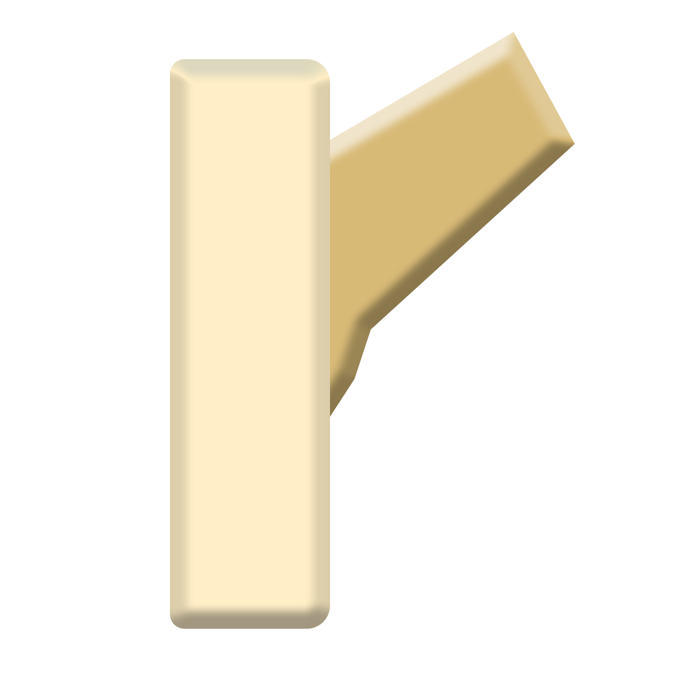 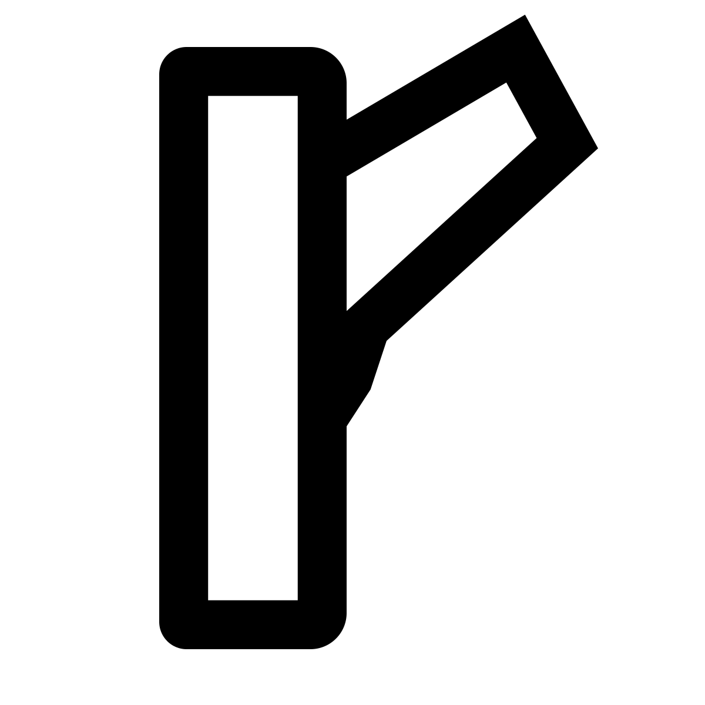 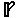Down Switch
 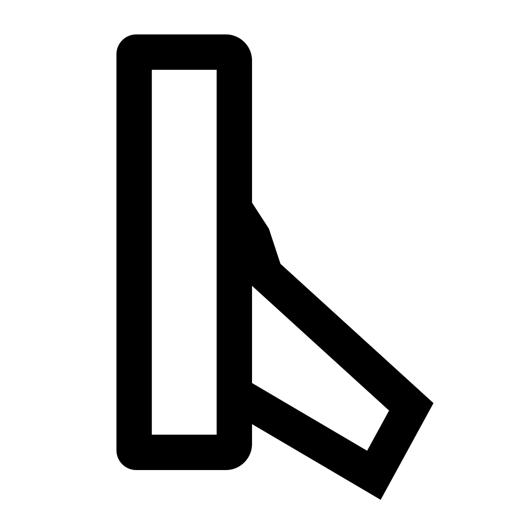
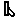
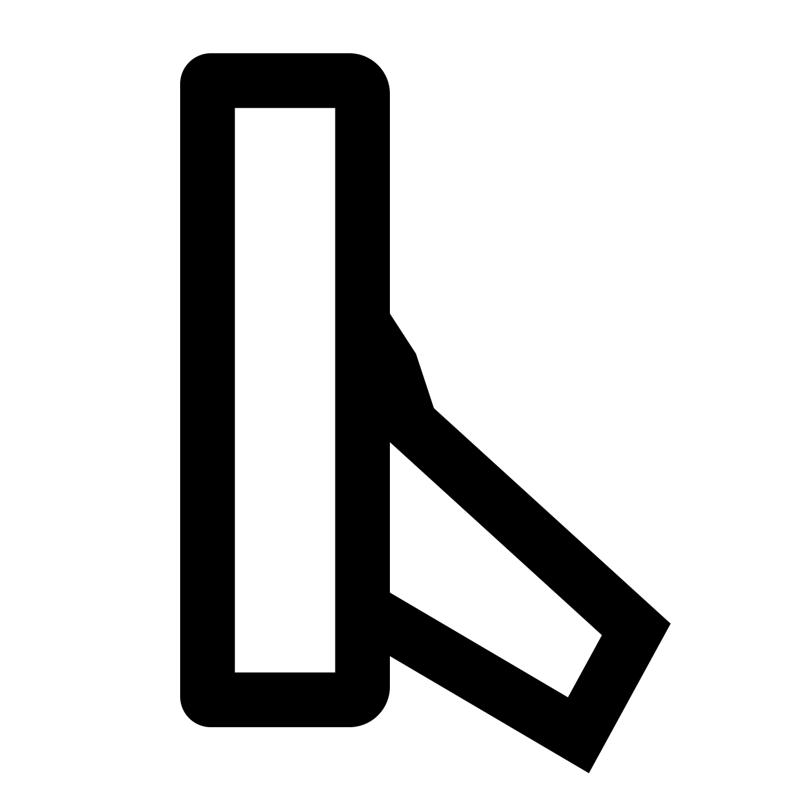
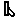
License: These images are the original work of the submitters and are certified to have the appropriate licenses for use by the UTC.
III. Sort Location
- Category
- computer
- Append Location
- after plug, and before computer
🔋🪫🔌 💻
IV. Selection Factors - Inclusion
Compatibility: N/A
Expected Usage Level:
Frequency for "switch"
| Search Tool | Result (excluding "nintendo switch" where possible) |
|---|---|
| Google Search | 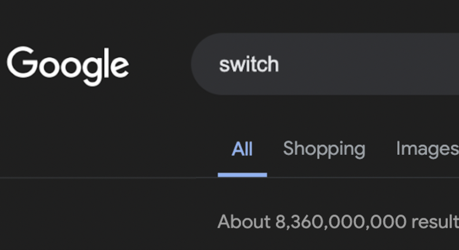 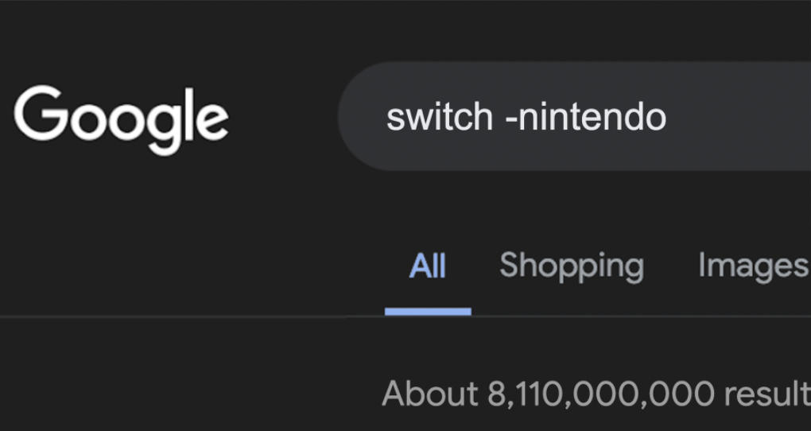 |
| Google Videos |
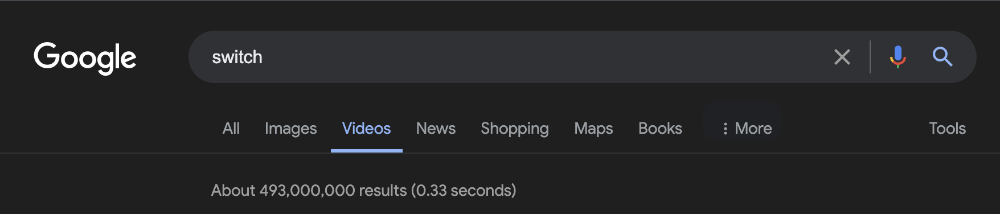

|
| Google Books | 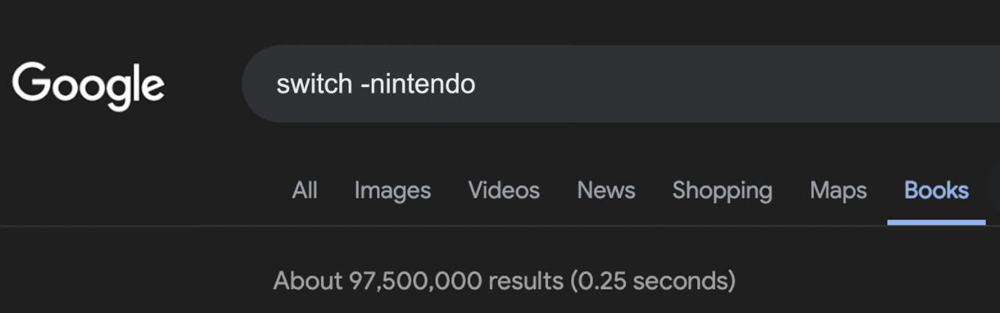 |
| Bing Search | 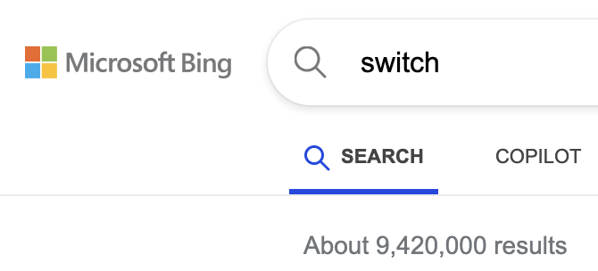 |
| Google Trends Web | 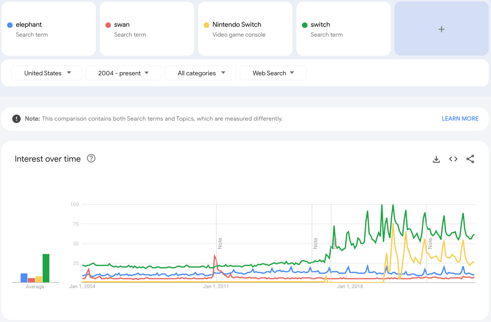 |
| Google Trends Images | 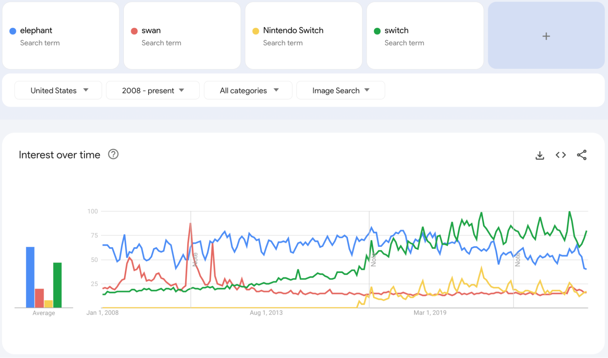 |
| Google Ngram | 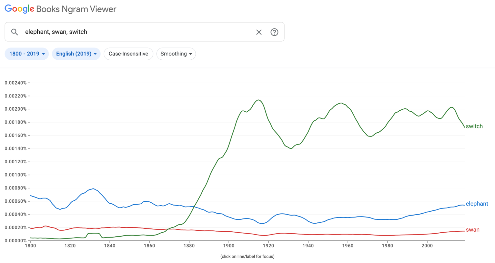 |
Use in Sequences:
- “turn off the lights and the TV”
💡📺 - “Surprise Party”
😔 🥳🎶🎂 - “Have you tried turning it off and turning it back on again?”
❓ - “It’s bedtime, I’m powering down for the day”
🛏️😴 - “Indecision”
🤔 - “Vacation time”
💻 🌴 - “Code switching”
🗣️
Multiple usages
- On/Off: Digital devices, household appliances and many everyday items have “off” and “on” states that people switch between
- Activating/Deactivating: Switching on can be used metaphorically to mean focusing on a task, or entering a state of additional capability
- Binary state: Because the switch can only be up or down, it can be used to represent any sort of binary information
- Recent changes: The switch can imply not just the possibility of change, but that a change was recently made i.e “switching sides”
- Lever: The swtich can be used to signify pulling a lever, a simple machine with wide presentation in culture.
Breaking New Ground
The current emoji set cannot express the concept of turning things “on” and “off.” There are various up ⬆️ and down ⬇️ arrows, but these are included in arrow sets that can also go in other directions, which does not communicate the same binary choice, nor do they have any association with powered devices. There are play ▶️, pause ⏸️, and stop ⏹️ buttons, but these are also not binary and not nearly as expressive: one does not “stop” the lights or “play” the A/C.
Even expressing these concepts individually is a challenge. The existing ways to express “off” are highly specific, like “mobile phone off” 📴 or “sound off” 🔇, and therefore cannot be easily combined with other emoji to establish new contexts or meanings. And almost no emojis even approximate “on.” The various devices that one might turn on do not have corresponding “on” and “off” versions—there is only one lightbulb 💡, for instance, and it is typically rendered lit.
Distinctiveness
As a pair, the up and down switches are recognizable symbols of state change, especially dramatic or binary ones.
Visually, nothing in the existing emoji looks like a switch. The other “off” emojis typically use abstract representations of prohibition, like the color red or strikethroughs, to symbolize that something is not happening. There are also no physical items that resemble a switch, like a lever.
| Search Tool | Result (excluding "nintendo switch" where possible) |
|---|---|
| 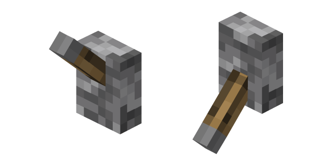 | A switch in Minecraft, the single most popular game in the world (>300M copies). |

|
Dr. Ellie Sattler (Laura Dern) flips a switch to return power to Jurassic Park. |
| 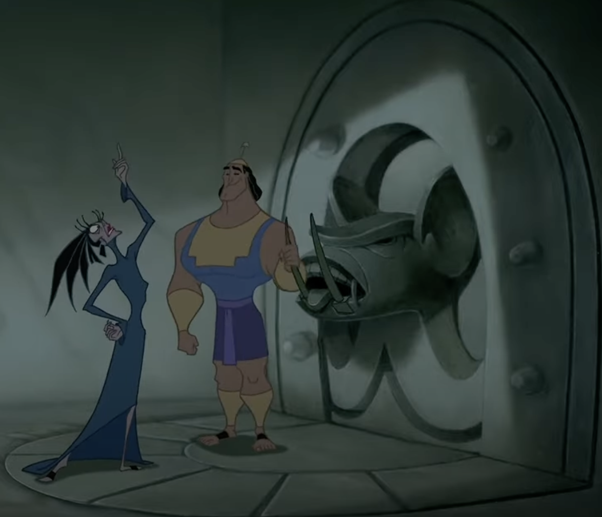 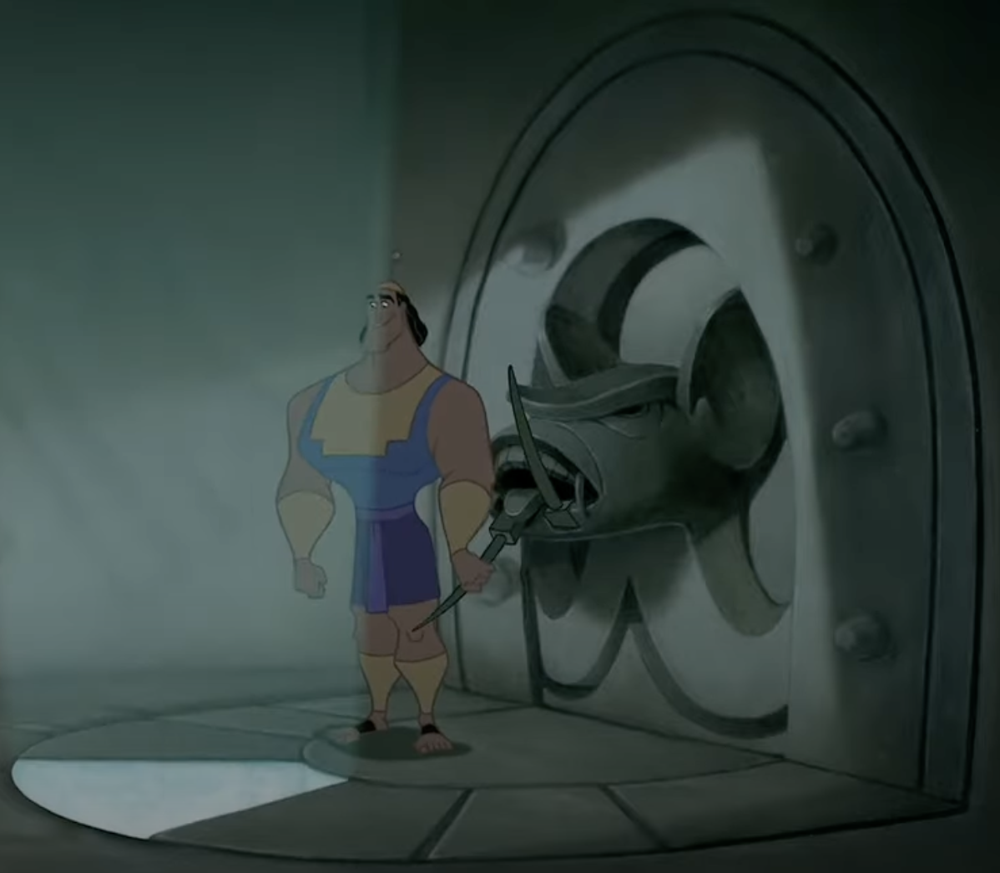 | Kronk pulls the wrong lever in “The Emperor’s New Groove,” activating a trap door. |
| 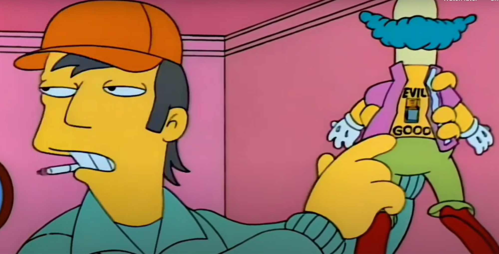 | A character reveals an “evil / good” switch on a Krusty the Clown figurine in The Simpsons |
Completeness
The up and down switches are themselves a complete pair, representing the only two states of a switch, but they also complete an expressivity gap that is unique to electronic devices. Many related categories of emoji can express an “engaged” or “disengaged” state (🔒/🔓, 🔋/🪫, 📷/📸). While it would be not be feasible to add on and off states for every electronic device (📺, 💻, 📱, 📻, 💡, etc.), adding the switches instantly makes it possible to express that with the entire existing set of devices.IV. Selection Factors - Exclusion
- Petitions or “Frequent Requests”
- No such petitions exist.
- Overly Specific
- No, switches are a universal mechanism for myriad devices, tools, and machinery
- Open-ended
- No, there are only two possible switch states.
- Already represented
- No
- Logos, brands, other third-party IP, UI icons, signage, specific people, specific building and landmarks, deities
- No
- Transient
- No, physical switches remain ubiquitous
- Faulty Comparison
- Proposal justification is not based on existing symbols
- Exact images
- Not required
- Region Flags Without Codes
- N/A
- Lack of Required Rights or License for Images
- N/A
- Variation on Direction
- N/A
- Includes Text
- N/A
IV. Other information
Regional differences:
In the US, Canada, Russia, and many European Countries, the up switch is used to turn things on, while in the UK and many Commonwealth Countries the reverse is true. This could be handled in two ways: either the emojis represent “on” and “off” switches and get regionalized in the appropriate orientation, or the emojis represent “up” and “down” switches, and one relies on shared cultural context to interpret them.
We propose the latter. Anecdotally, visual differences in the depiction of emojis seem to cause more surprise than cultural differences. Using up/down instead of on/off moves the communication burden from a technical problem (US English vs UK English in the phone settings) to a social problem (“I am texting my UK friend, where the switches are different”), which we suspect users prefer. It is also probably better to promise less in the official description—up/down will always be accurate—and allow users to fill in the higher-order concepts, like on and off, contextually.
Of course, we defer to the localization experts at the Unicode Foundation on the best way to approach this challenge, and merely flag it here for reference.
PDF: View the PDF version